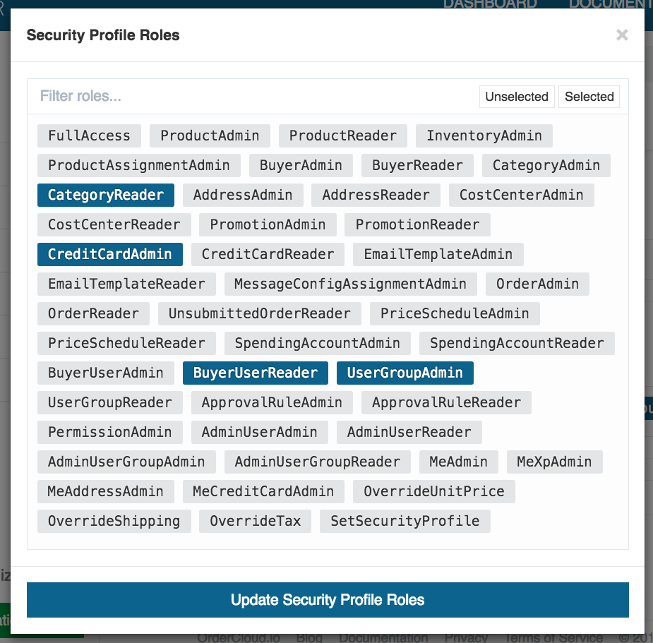

__Overview
Security Profiles are an assortment of roles that give access to specific
endpoints in the OrderCloud.io API. Profiles can be assigned to the users of
your Seller or Buyer application. If a request is made by a user without
sufficient roles they will receive 403 Forbidden response. Configuration of
these profiles is possible within the Security Profiles view in the
OrderCloud.io Dashboard.
__Roles
Security Profiles are made up of a list of roles which fall into one of two
categories: Admin and Reader. An Admin role allows read and write access
while a Reader role type allows only read access.

__Assigning Profiles
Security Profiles are assigned at the party level (User, User Group, Buyer
Organization or Admin Organization).
If more than one Security Profile is inherited, the roles will be a union of
the roles from every inherited Security Profile.